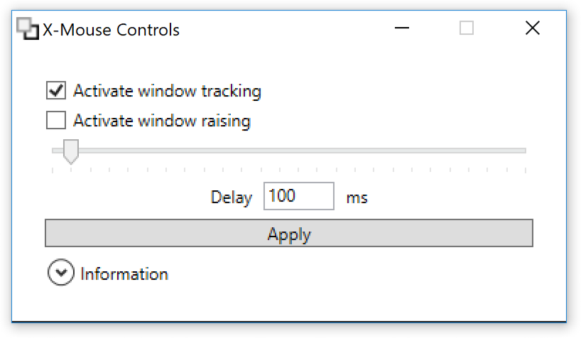

X-Mouse Controls
Windows utility to enable or disable active window tracking, raising and also the delay in milliseconds. This is known as x-mouse behavior or focus follows mouse.
Download latest version Curious? Beta version
Works on Windows 10, Windows 8, Windows 7, Windows Vista, Windows XP, Windows Server 2012, Windows Server 2008, Windows Server 2003. Might work on other versions as well.
X-Mouse Controls is competely free! If you like and use X-Mouse Controls, please tell your friends and link back to this page. Donations are also very much appreciated.
What is x-mouse behavior?
When multiple programs are running on a Windows operating system, the default mode of operations is that you click one window after another to give them focus for keyboard inputs. With the x-mouse settings that click is not necessary — the only thing needed is to move your cursor over the window for it to become active.
This behavior has been possible, but disabled, in different versions of Windows for years. It is usually enabled through Windows accesiblity settings or a wide variety of tools and utilities, most notably Tweak UI found in Microsoft PowerToys. However, Tweak UI does not run on Windows Vista, Windows 7, Windows 8, Windows 10, Windows Server 2008, Windows Server 2012, and later versions, which is why I created this utility.
Screenshots

The main window, running on Windows 10
Features
- Active window tracking
- Enable to give focus to windows by moving your cursor over them, known as focus follows mouse. Obeys the delay described below.
- If disabled (default) a click is required to activate a window, known as clickfocus.
- Active window raising
- Enable to automatically make the active window the topmost window, known as autoraise.
- If automatic window raising is disabled (default) it allows the user to type text or give commands in one window without changing the order of the other windows.
- Active tracking delay
- The delay, in milliseconds, until the window focus changes. This program allows settings from 0 milliseconds (instant focus) to 2500 milliseconds (very long delay). A value of 100—300 ms is recommend to avoid windows stealing focus too fast. See usage.
- Apply
- Saves the settings and applies them to your system. The settings come in effect right away, and stay even after rebooting.
Usage, tips, and workarounds
- X-Mouse Controls does not require installation. You only need to run it once to change settings; all applied changes are persisted immediately.
- If windows and menus disappear before using them, try increasing the delay. A delay of 100—300 is recommended, depending on how fast you move the mouse cursor.
- To work around some window raising and menu problems, click and hold your left mouse button on an empty (unresponsive) area, drag the cursor to where you want to focus, and let go.
- Active window raising can be problematic when some programs/windows completely overlap others, especially in combination with a low delay. Try turning off active window raising.
Donate
X-Mouse Controls is competely free! You even get the source code for free. To develop open source software is not without cost though — it takes technical knowledge, time, and effort.
You don't have to be a developer to support my open source work! If you want to receive personal support, or just feel all warm and fuzzy inside from helping open source development, donations are very welcome.
| Open source | Feel-good | Extra feel-good | Corporate feel-good | |
|---|---|---|---|---|
| Active window tracking | ✓ | ✓ | ✓ | ✓ |
| Active window raising | ✓ | ✓ | ✓ | ✓ |
| Active tracking delay | ✓ | ✓ | ✓ | ✓ |
| Instant apply | ✓ | ✓ | ✓ | ✓ |
| Source code | ✓ | ✓ | ✓ | ✓ |
| Github support | ✓ | ✓ | ✓ | ✓ |
| Email support | ✓ | ✓ | ✓ | ✓ |
| Chat support | ✓ | ✓ | ✓ | |
| Phone support | ✓ | ✓ | ||
| Invoice for bookkeeping | ✓ | |||
| Free! | Donate $5 now | Donate $25 now | Donate $100 now |
Notes
- Report issues on github or contact the developer with questions directly.
- In order to avoid X-Mouse Controls being buried below other windows while exprimenting with the settings, it will always stay on top of other windows. Minimize first to test window raising.
- Uninstallation is easy — just delete the X-Mouse Control files. Optionally run the program to turn off active window tracking first, as the settings are persisted.
- Some applications, especially those with a Multiple Document Interface, may raise their own window even though the feature is disabled. See usage.
- What is known as x-mouse on Windows is different from Xmouse on other systems. On Windows, it is closer to the X Window System (X11) setting focus follows mouse (FFM) or focus follows pointer.
- Requires Windows Presentation Foundation, which is included in .NET Framework 3.5 and .NET Framework 4. One of them is most likely already installed on your system.
- If you use a version of Windows released prior to Windows Vista, it is recommended to use Tweak UI, found in Microsoft PowerToys and the related powertoy Microsoft Xmouse 1.2.
Source code
The source code, including this webpage and original graphics, has been released under the GNU General Public License. Contributions are
most welcome! Please create pull requests against the develop branch, and follow the git-flow branching style.
To work on X-Mouse Controls, you need Microsoft Visual Studio. You can easily run a complete developer setup in a virtual machine, freely available from Microsoft. Please test any changes on at least Windows 7 and Windows 10, as both have a lot of users and high market share (September 2018).
- Microsoft development environment — Windows 10 virtual machine with Visual Studio.
- Microsoft test environment — Windows 7/8.1/10 virtual machines.
History and downloads
- v1.1.0.0 (2018-10-06 19:30 CET)
- Download (pgp signature). See also Source code (pgp signature), Debug build (pgp signature).
-
- Minimize the main window. Requested in #5 by bitofhope. Fixed in #6, thank you Nathan Phillip Brink!
- Can run on Windows 10 without downloading .NET Framework 3.5. Both request in #11 and fixed in #12 by Nathan Phillip Brink, thank you!
- More usage information and tips in the main window.
- Reflect system settings changes in the X-Mouse Controls window.
- Update icon to depict a focused window below an unfocused window (instead of a focused window on top of an unfocused window). Graphics were updated by Miroslava Jovičić, thank you!
- v1.0.1.0 (2012-08-12 20:30 EST)
- Source code
- No changes, but the source code is now release on github under the GNU General Public License.
- v1.0.1.0 (2010-04-03 11:55 CET)
- Download (pgp signature). See also Source code (pgp signature), Debug build (pgp signature).
- Allows for manual input of the delay, new web site links, using more bindings.
- v1.0.0.1 (2007-12-27 16:19 CET)
- Download (pgp signature). See also Source code (pgp signature), Debug build (pgp signature).
- Disables the active window raising checkbox and delay slider when the active window tracking checkbox is not checked.
- v1.0.0.0 (2007-12-27 14:04 CET)
- Download (pgp signature). See also Source code (pgp signature), Debug build (pgp signature).
- First version, initial release.
About the author
Joel Purra is a software engineer working on both commercial and open source projects. He is available for consulting work.
Search engine fodder
This section can be ignored by humans.
System calls
X-Mouse Controls is using system calls from SystemParametersInfo in user32.dll, especially SPI_GETACTIVEWINDOWTRACKING, SPI_GETACTIVEWNDTRKZORDER,
SPI_GETACTIVEWNDTRKTIMEOUT.
Incoming links
- Douglas Whitaker: Focus Follows Mouse in Windows
- alternativeTo: X-Mouse Controls
- superuser.com: How do you enable focus follows mouse in Windows 10 (answer)
- superuser.com: How to make mouse in Windows 7 act the same as Windows XP (answer)
- Ars Technicha: Help Request: How to enable "focus-follows-mouse" in Windows 7 (comment)
- Run like Hell: Windows 8: Configuring focus follows mouse and auto-raise behaviour (comment)
- SevenForums: Windows 7: I need to prevent the focus window from coming to the top (comment)
- AutoHotKey: Auto-raise / mouse hover (comment)
- Beyond Windows 9: X-Mouse for W7+
- Micha's Blog: Installing Windows 7
- ReactOS JIRA: CORE-10046 Add an option for mouse-follows-focus behavior into control panel
- Reddit /r/software: Ubuntu scrolling on windows 8.1
- Reddit /r/buildapc: What programs do you use?
- Shores of Hazeron — Massive Multiplayer Online Science Fiction: Construction Window Steals Focus
Windows Ease of Access Center (Windows 7)
The Windows control panel offers you to enable/disable x-mouse, but not to tweak it. Use X-Mouse Controls instead.
- Enter Ease of Access Center (shortcut Win+U)
- Click Change how your mouse works
- Enable Activate a window by hovering over it with the mouse
Registry hacks
Direct edititing of the registry for x-mouse values is considered a bad thing, as there are API calls which do this correctly and apply the results right away — with X-Mouse Controls there is no need to log out and in, or restart your computer. The following words are only here to help others searching for a tool that makes an inactive window active by hovering: HKEY_CURRENT_USER\Control Panel\Mouse\ActiveWindowTracking, HKEY_CURRENT_USER\Control Panel\Desktop\ActiveWindowTracking, HKEY_CURRENT_USER\Control Panel\Desktop\ActiveWndTrkTimeout, HKEY_CURRENT_USER\Control Panel\Desktop\UserPreferencesMask, REG_DWORD, REG_BINARY.
Windows 3.11, Windows 95, Windows 98
Excerpt from AXCEL216's MAX Speeed Windows 98/98 SE + DOS 7.10 ©Tricks, Secrets, BUGs + FIXes
X-Mouse settings do not "stick" [Thank you Joel Purra (e-mail removed)!]: TweakUI's Mouse tab -> "Activation follows mouse (X-Mouse)" box checked, and: TweakUI's General tab -> "X-Mouse AutoRaise" and "Mouse hot tracking effects" boxes checked. This can be fixed in some cases (reminiscent from the old XMouse MS Power Toy 95) by adding/changing these Win.ini entries under the [XMouse] section:
[XMouse] BringWindowToTop=1 ConsoleWindowsOnly=1 Delay=1
Edit Win.ini (located in your Windows folder) with Notepad or Sysedit. Change any of these lines from 1 to 0 or back, and then restart Windows to see if it works. See "ACTIVE WINDOW TRACKING" in REGISTRY.TXT (included) to learn how to properly activate/fix X-Mouse settings used by TweakUI.